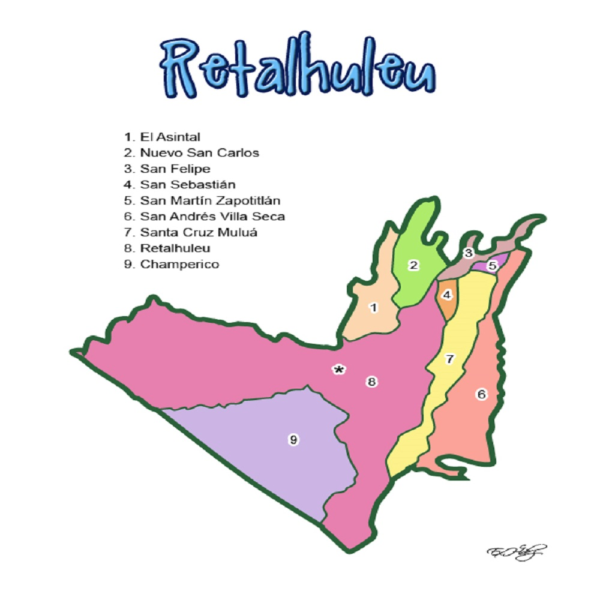

Los municipios se encuentran regulados en diversas leyes de la República, que establecen su forma de organización, lo relativo a la conformación de sus órganos administrativos y los tributos destinados para los mismos. Aunque se trata de entidades autónomas, se encuentran sujetas a la legislación nacional. Las principales leyes que rigen a los municipios en Guatemala desde 1985 son: Principales leyes que rigen a los municipios de Guatemala N.º Ley Descripción 1 Constitución Política de la República de Guatemala Tiene una regulación legal específica para los municipios en los artículos 253 al 262. 2 Ley Electoral y de Partidos Políticos Ley de carácter constitucional aplicable a los municipios en el tema de la conformación de sus autoridades electas. 3 Código Municipal Decreto 12-2002 del Congreso de la República de Guatemala. Tiene la categoría de ley ordinaria y contiene preceptos generales aplicables a todos los municipios, e inclusive contiene legislación referente a la creación de los municipios. 4 Ley de Servicio Municipal Decreto 1-87 del Congreso de la República de Guatemala. Regula las relaciones entra la municipalidad y los servidores públicos en materia laboral. Tiene su base constitucional en el artículo 262 de la constitución que ordena la emisión de la misma. 5 Ley General de Descentralización Decreto 14-2002 del Congreso de la República de Guatemala. Regula el deber constitucional del Estado, y por ende del municipio, de promover y aplicar la descentralización y desconcentración económica y administrativa. El gobierno de los municipios de Guatemala está a cargo de un Concejo Municipal6? mientras que el código municipal —que tiene carácter de ley ordinaria y contiene disposiciones que se aplican a todos los municipios de Guatemala— establece que «el concejo municipal es el órgano colegiado superior de deliberación y de decisión de los asuntos municipales […] y tiene su sede en la circunscripción de la cabecera municipal». Por último, el artículo 33 del mencionado código establece que «[le] corresponde con exclusividad al concejo municipal el ejercicio del gobierno del municipio».7? El concejo municipal se integra con el alcalde, los síndicos y concejales, electos directamente por sufragio universal y secreto para un período de cuatro años, pudiendo ser reelectos.6?7? Existen también las Alcaldías Auxiliares, los Comités Comunitarios de Desarrollo (COCODE), el Comité Municipal del Desarrollo (COMUDE), las asociaciones culturales y las comisiones de trabajo. Los alcaldes auxiliares son elegidos por las comunidades de acuerdo a sus principios, valores, procedimientos y tradiciones, estos se reúnen con el alcalde municipal el primer domingo de cada mes. Los Comités Comunitarios de Desarrollo y el Consejo Municipal de Desarrollo tiene como función organizar y facilitar la participación de las comunidades priorizando necesidades y problemas.
 Los Municipios del Departamento de Retalhuleu son: 1) Municipio de Retalhuleu 2) Municipio de Champerico 3) Municipio de El Asintal 4) Municipio de Nuevo San Carlos 5) Municipio de San Andrés Villa Seca 6) Municipio de San Felipe Retalhuleu 7) Municipio de San Martín Zapotitlán 8) Municipio de San Sebastián 9) Municipio de Santa Cruz Mulua San Sebastián 9) Municipio de Santa Cruz Muluá